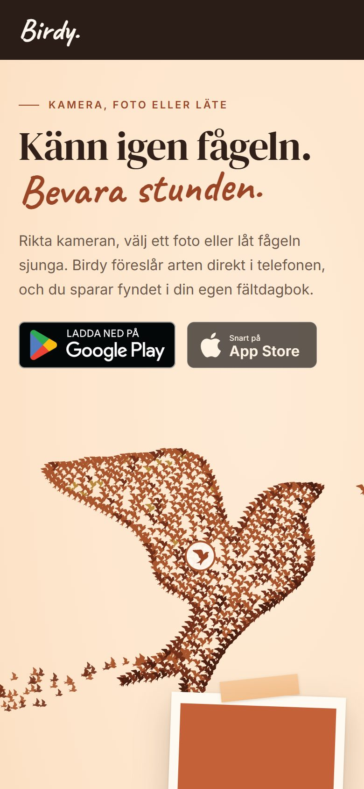
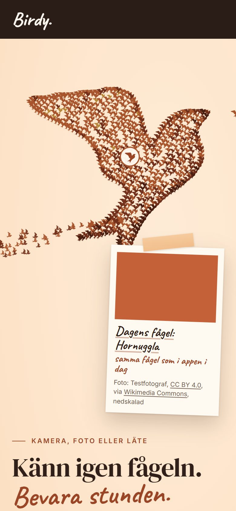

<title>Words or flock first?</title>
<link rel="preconnect" href="https://fonts.googleapis.com">
<link rel="preconnect" href="https://fonts.gstatic.com" crossorigin>
<link rel="stylesheet" href="https://fonts.googleapis.com/css2?family=Caveat:wght@700&family=DM+Serif+Display&family=Inter:wght@400;600&display=swap">
<style>
  :root {
    --ground: #FDE5CB;
    --paper: #FFF6EA;
    --ink: #2A1D17;
    --muted: #6E584B;
    --rust: #9A4526;
    --line: #E7C9A8;
    --pick: #9A4526;
    color-scheme: light;
  }
  @media (prefers-color-scheme: dark) {
    :root:not([data-theme="light"]) {
      --ground: #1E1410; --paper: #2A1D17; --ink: #F6E9DA; --muted: #CDB8A6; --rust: #E89A6C; --line: #4A362B; --pick: #E89A6C;
      color-scheme: dark;
    }
  }
  :root[data-theme="dark"] {
    --ground: #1E1410; --paper: #2A1D17; --ink: #F6E9DA; --muted: #CDB8A6; --rust: #E89A6C; --line: #4A362B; --pick: #E89A6C;
    color-scheme: dark;
  }
  body { background: var(--ground); color: var(--ink); font: 400 16px/1.6 Inter, system-ui, -apple-system, "Segoe UI", sans-serif; padding: 28px 16px 48px; }
  main { max-width: 980px; margin: 0 auto; display: grid; gap: 28px; }
  .kick { font: 600 12px/1.2 Inter, system-ui, sans-serif; letter-spacing: .18em; text-transform: uppercase; color: var(--rust); margin: 0; }
  h1 { font: 400 clamp(34px, 6vw, 52px)/1.04 "DM Serif Display", Georgia, serif; margin: 6px 0 0; text-wrap: balance; }
  .lede { max-width: 62ch; color: var(--muted); margin: 0; }
  .lede b { color: var(--ink); font-weight: 600; }
  .pair { display: grid; grid-template-columns: repeat(auto-fit, minmax(280px, 1fr)); gap: 24px; align-items: start; }
  figure { margin: 0; background: var(--paper); border: 1px solid var(--line); border-radius: 16px; padding: 18px; display: grid; gap: 14px; }
  figure.pick { border: 2px solid var(--pick); }
  .head { display: flex; align-items: baseline; justify-content: space-between; gap: 12px; flex-wrap: wrap; }
  .head h2 { font: 400 26px/1.1 "DM Serif Display", Georgia, serif; margin: 0; }
  .head .note { font: 700 21px/1 Caveat, "Comic Sans MS", cursive; color: var(--pick); }
  .src { font-size: 14px; color: var(--muted); margin: -6px 0 0; }
  .phone { position: relative; width: min(100%, 320px); justify-self: center; border-radius: 26px; overflow: hidden; border: 6px solid var(--ink); background: var(--ink); }
  .phone img { display: block; width: 100%; height: auto; }
  .phone .fold { position: absolute; left: 0; right: 0; bottom: 0; padding: 6px 10px; font: 600 11px/1.2 Inter, system-ui, sans-serif; letter-spacing: .06em; text-transform: uppercase; color: #FFF6EA; background: rgba(30, 20, 16, .72); text-align: center; }
  ul { margin: 0; padding-left: 1.1em; display: grid; gap: 6px; font-size: 15px; }
  .ask { background: var(--paper); border: 1px solid var(--line); border-radius: 16px; padding: 18px 20px; display: grid; gap: 6px; }
  .ask h2 { font: 400 24px/1.15 "DM Serif Display", Georgia, serif; margin: 0; }
  .ask p { margin: 0; max-width: 66ch; }
  .small { font-size: 13.5px; color: var(--muted); }
</style>

<main>
  <header>
    <p class="kick">birdy.community · Flocken lyfter · 9 October 2026</p>
    <h1>On a phone, words first or flock first?</h1>
  </header>

  <p class="lede">On a computer the new hero has two columns: the words on the left, the flock on the right. A phone is too narrow for that, so one of them has to sit on top. <b>The prototype you approved puts the words on top and the flock under them, and that is how it is built now.</b> The spec I wrote afterwards said the opposite by mistake. These are the two orders on an iPhone 14 screen (390 × 844), as the page looks after the flock has landed. The photo is a placeholder in this test build, and the flock's flight comes in the next step.</p>

  <section class="pair" aria-label="The two orders">
    <figure class="pick">
      <div class="head"><h2>A · Words first</h2><span class="note">my pick</span></div>
      <p class="src">Built now, same as the prototype you approved</p>
      <div class="phone"><span class="fold">End of the first screen</span></div>
      <ul>
        <li>The headline and the Play button are on the first screen, no scrolling.</li>
        <li>The whole bird lands inside the first screen, right under the words.</li>
        <li>Dagens fågel's polaroid starts at the bottom edge and shows fully after a short scroll.</li>
      </ul>
    </figure>

    <figure>
      <div class="head"><h2>B · Flock first</h2></div>
      <p class="src">What the spec text said</p>
      <div class="phone"><span class="fold">End of the first screen</span></div>
      <ul>
        <li>The flock and the polaroid fill the first screen.</li>
        <li>The headline lands at the very bottom edge, and in Safari, with its toolbars, below it.</li>
        <li>The Play button needs a scroll (about 960 px down; on a small Android, the headline does too).</li>
      </ul>
    </figure>
  </section>

  <section class="ask">
    <h2>Reply A or B</h2>
    <p>I recommend A: it is what you approved, the first screen says what Birdy is and has the download button, and the flock still lands in full view right below. B makes the flock the first thing you see, at the cost of the message and the button.</p>
    <p class="small">Measured with the hero build on branch website/flocken-lyfter (Task 4), at 390 × 844, 360 × 740 and 412 × 915.</p>
  </section>
</main>
